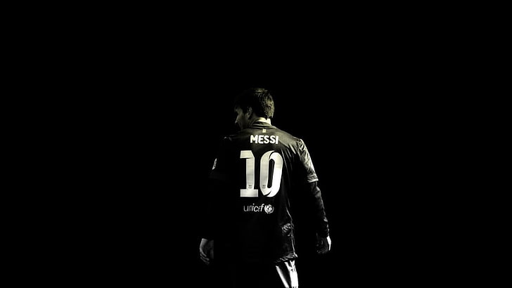

Um ano histórico para o grande jogador.

O ano de 2012 foi verdadeiramente excepcional para Lionel Messi. Durante esse período, Messi exibiu uma forma impressionante, quebrando recordes e conquistando títulos importantes. Com 91 gols marcados em jogos oficiais, ele superou o recorde de Gerd Müller e se tornou o maior artilheiro em um único ano na história do futebol.
Além disso, Messi liderou o Barcelona para conquistar vários títulos, incluindo La Liga, Copa del Rey, Supercopa de España, UEFA Super Cup e FIFA Club World Cup. Sua contribuição para o sucesso do Barcelona e suas realizações individuais fizeram de 2012 um dos anos mais marcantes de sua carreira.
Em uma partida épica contra o Real Madrid, Messi marcou 2 gols e deu uma assistência, liderando o Barcelona para uma vitória crucial.